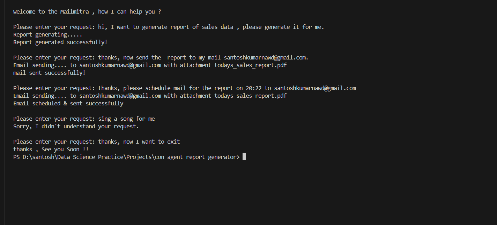

Conversational-Agent-for-Automated-Daily-Report-Generation
Project Overview
This project aims to automate the generation and distribution of daily sales reports using a simple conversational agent. The agent interacts in a natural chat interface, making the process seamless and user-friendly.

Features
📊 Extract Data
- Task: Extract data from the sales spreadsheet.
- Description: The agent pulls the latest sales data from a predefined spreadsheet, ensuring that the report is always up-to-date.
📝 Generate Report
- Task: Generate a daily sales report in PDF format.
- Description: The agent compiles the extracted data into a well-structured PDF report, highlighting key metrics and trends.
📧 Email Report
- Task: Email the report to the management team.
- Description: The agent sends the generated report to the management team via email, ensuring timely delivery of crucial sales information.
⏰ Scheduling
- Task: Send the report on demand or schedule the mailing at a certain time.
- Description: The agent can send the report immediately upon request or schedule it to be sent at a specific time, providing flexibility and convenience.
How It Works
- User Interaction: The user interacts with the conversational agent through a natural chat interface.
- Data Extraction: The agent extracts the latest sales data from the spreadsheet.
- Report Generation: The agent generates a detailed sales report in PDF format.
- Report Distribution: The agent emails the report to the management team, either on demand or at a scheduled time.
Benefits
- Efficiency: Automates repetitive tasks, saving time and reducing errors.
- Convenience: Provides a simple and intuitive way to manage sales reports.
- Timeliness: Ensures that the management team receives up-to-date sales information promptly.
Conclusion
This project leverages the power of conversational AI to streamline the process of generating and distributing sales reports, enhancing productivity and ensuring timely access to critical sales data.